Attentional Control Theory
Get these slides:
Dr Germano Gallicchio
Lecturer in Computational Psychophysiology
School of Sport Science, Bangor University, UK
On a computer press F11 to de/activate full-screen view.
For smartphone view and for pdf document: use “learning resources” link above.
Learning outcomes, Session I
From working memory and attention, through what anxiety does to them, to the quiet eye. By the end of this session you should be able to:
- Describe attentional control, in terms of goal-directed and stimulus-driven orienting
- Define cognitive anxiety (worry) and distinguish it from the other forms of anxiety
- Explain the distinction between processing efficiency and performance effectiveness
- Describe empirical evidence that anxiety biases attention towards threat
- Define the quiet eye, as a variable and as a phenomenon
- Recognise when a performance problem can be due to issues with attentional control
Optional material
Note
Content in slides marked Optional is not examined in the multiple-choice test. It adds depth on how the mechanism works, which can support a stronger, more critical essay. Press the down arrow / scroll down where you see the cue.
Attentional Control Theory, in a nutshell
Anxiety consumes working memory and transfers attention from goal-directed to stimulus-driven control ; performers compensate with extra effort, so efficiency drops before performance does.
In lay terms:
1. Worry takes resources. There is less left for the task.
2. Attention is called to whatever is salient rather than by what the task requires.
3. You can maintain performance by trying harder but you would be using more resources = less efficient.
Agenda
Worksheet
Space to write during this session: predictions, reasoning, notes.
Open it now and keep it alongside the slides.
Use the copy or download button to save your work.
Working memory (brief recap)
Attentional control theory uses both features. Only these two are needed here.
Optional: Attention, Working memory and executive functions
Fuller treatment of the material here:
Working memory has limited capacity
Think of working memory as the set of resources for temporarily holding and manipulating information.
Analogy used often: a working desk. There is enough space for the things you are working on right now, not much else…

Desk analogy
The white rectangle is the desk, representing how much working memory is being used at this moment. Currently: unlikely/impossible situation where nothing is taking space in working memory
Desk analogy
Most of the times (or always) something occupies space on the desk: the things that are in the working memory. Sometimes one has enough working memory capacity spare to do well whatever it is that one is doing.
Desk analogy
Other times, there’s too much in working memory and the system fails due to overload (running out of cognitive resources). Whatever one is doing is going to suffer in quality.
Working memory’s multiple components

Three components: two store information, one manages access to it.
Anxiety is proposed to disrupt the central executive, not the two storage components.
In Session II the central executive is subdivided into three executive functions. Three of the six hypotheses of Attentional Control Theory concern them.
Optional: Development of the working memory model
Alan Baddeley on the development of his working memory model: https://youtube.com/watch?v=mT0NLihOK30
House windows exercise
Helpful to realize how the three components work together.
Take a couple of minutes to work out how many windows are there in your house
You retreive from long-term memory and manipulate a mental image of your house as you “walk through” it room by room (visuospatial sketchpad)
As you progress, you keep a count of the number of windows by rehearsing the numbers out loud or not. (phonological loop)
You will have followed a strategy: deciding which rooms to visualize next, keeping track of progress, and ensuring the count is updated (central executive).
Orienting of attention: endo- vs exo-genous
Limited capacity means that not all information can be processed. Selection is required, and that is one function of attention. Orienting can be driven from two directions.
Endogenous / goal-directed
- “endo” = from the inside
- voluntary, intentional
- determined by the person
- top-down
- in sport: concentration
Exogenous / stimulus-driven
- “exo” = from the outside
- involuntary, not intentional
- determined by the environment
- bottom-up
- in sport: distraction
Examples:
- Goal-directed: deliberately turning your head to look where your team-mate will pass
- Stimulus-driven: in a tennis tournament, someone in the crowd shouts your name
This distinction underlies the third hypothesis of Attentional Control Theory, stated formally in Session II: anxiety shifts the balance between these two systems.
“Cocktail party” scenario
Designed to illustrate selective feature of attention at the preconscious level, but here merely a shortcut for me to illustrate goal-directed and stimulus-driven attention at play.

You are in a noisy place. You choose to attend to one speaker (goal-directed). Suddenly, your attention is captured (distracted) by a salient, personally relevant cue (like hearing your name from your back) (stimulus-driven).
Important: the extent of attentional control can be defined as the balance between goal-directed (concentration) and stimulus-driven (distraction) attention
What does anxiety do to attentional control?

Arousal removes the dominance of central stimuli (Shapiro & Johnson, 1987)
Study 1, key methodology
- N = 30 University students
- Task: Classify central and peripheral target stimuli (perceptually difficult because the target stimuli were presented for a short duration.) Using one hand.
- Participants needed to keep their eyes on a central fixation cross. A target stimulus could appear either centrally or in the periphery … or both: dual trial (i.e., two targets at the same time)
- Groups: arousal, non-arousal
- The other hand was for receiving electrical shocks every now and then, but only the lucky ones in the arousal group.
- Analyses: the researchers were interested in the participants’ choices in the dual trials.
Study 1, main results
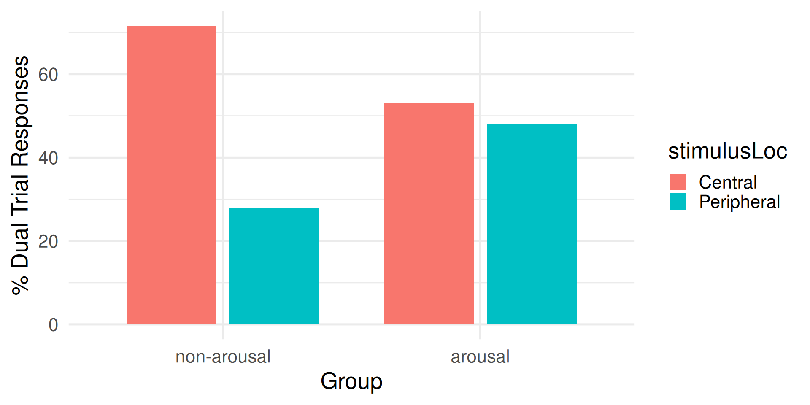
For the non-arousal group, dominance of central stimulus
For the arousal group, no dominance. Arousal countered the dominance of the central stimulus.
What it shows for ACT: under arousal, task-irrelevant peripheral stimuli compete successfully with the central target: stimulus-driven orienting gains ground.
With the centre less predictable, arousal reverses the dominance (Shapiro & Johnson, 1987)
Study 2, key idea
They realized the central stimulus was more predictable (only one location) than the peripheral stimulus. In study 2, they used the same Method, but made the central location less predictable than in study 1.
What do you think they found?
Study 2, main results
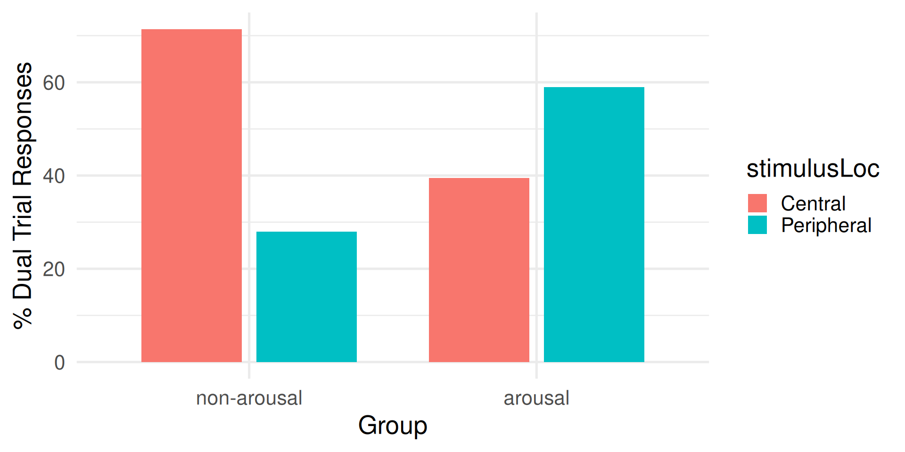
Arousal reversed the dominance, so that when a pair of central-peripheral targets were presented, the peripheral target became the dominant.
What it shows for ACT: the shift is not a fixed bias towards the periphery. Arousal favours whichever stimulus is more salient.
Threat cues speed detection, more so in phobics (Lipp & Derakshan, 2005)
Key methodology:
- N = 70 participants
- Groups:
- Spider/snake phobics
- non-phobics
- Task: emotional dot probe
- Emotional Dot probe: a cue appears on the screen either left or right before a target stimulus appears either left or right. The cue could be neutral or emotional (image of a snake).
Main results:
- The target was detected faster when appearing shortly after an emotional cue
- Larger effects for phobics
What it shows for ACT: threat-related cues capture attention, and what constitutes a threat is specific to the individual.
Negative sport-related words slow responses in athletes (Lautenbach et al., 2016)
Key methodology:
- N = 40 athletes
- Task: emotional Stroop task
- A: negative sport related words (e.g., defeat, failure, rival)
- B: neutral sport related words (e.g., endurance, position, sideline)
- C: neutral non-sport related words (e.g., radio, lemon, computer)
Main results:
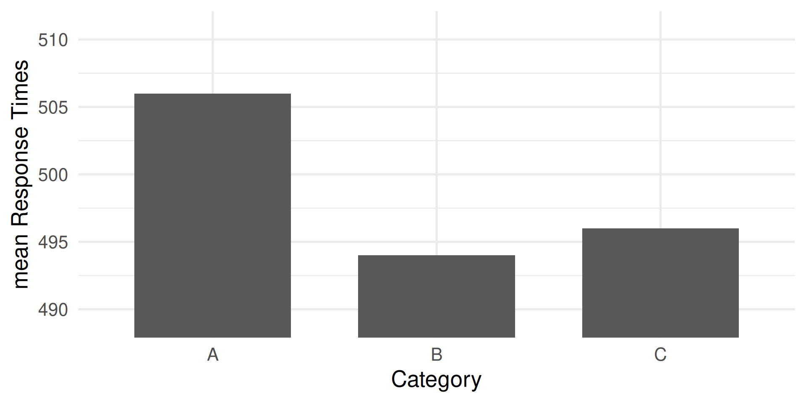
Significantly slower when responding to negative sport-related words.
What it shows for ACT: the interference is specific to personally relevant threat content, in a sport sample, not to negative words in general.
Summary of effects of anxiety on attention: Attentional Bias
Anxiety induces an attentional bias, consisting of enhanced processing of threats:
- early detection of threats
- impaired disengagement from threats
(whatever threat means to the individual).
Good or bad? Neither. From an evolutionary perspective, anxiety is an adaptive process that increase chances of survival. But thinking about threats might not always be the most functional way to use one’s working memory resources.
Worry and an easy task
Resources dedicated to worry (blue) are not dedicated to process task-related information. But there are plenty resources for both. Performance is good.
Greater worry, sufficient resources
If worry takes more resources (i.e., one experiences greater cognitive anxiety), while still leaving enough for the easy task, there is still space for both. Performance is still not impaired.
A more demanding task, insufficient resources
But if the task is more difficult requiring more resources, and if there are none left, performance will be impaired.
Performance is impared if there are not enough resources to carry out the task. Worry is a distraction that takes resources away from the task
Effort maintains performance at the cost of efficiency
Capacity can be temporarily increased through effort mobilisation. Resources are then sufficient for both, and performance is maintained.
Extra resources were required for the same output: decreased efficiency.
The same task performed more efficiently
In fact, even a task so difficult could have been carried out well in a more efficient manner (i.e., without the extra effort) if worry did not occupy so much of working memory.
Efficiency as a ratio
The effects of worry (cognitive anxiety) are best studied not on performance, but on processing efficiency.
Note
\[ \text{efficiency} \propto \frac{\text{performance}}{\text{resources}} \]
The formula is a short version of “how much you do in relation with how much effort you put tells about efficiency”. The symbol \(\propto\) means “is proportional to”.
PET vs ACT
Processing Efficiency Theory (Eysenck & Calvo, 1992), the predecessor of Attentional Control Theory.
PET specifies the cost but not the mechanism, which is what Attentional Control Theory adds.
Effort rises with set criticality; performance falls for high-trait-anxiety players (Smith et al., 2001)
Key methodology:
- N = 12 volleyball players
- 6 low and 6 high in trait anxiety
- Task: Eigth volleyball games
- Measures:
- State anxiety (through questionnaire)
- Effort mobilized (through questionnaire)
- Performance (through video analyses)
- Analysis factors
- Group (low, high trait anxiety)
- set criticality
- low: 7 or more points of difference
- moderate: between 3 and 6 points of difference
- high: less than 2 points of difference
Predictions:
- State anxiety would be greater for more critical sets
- Effort would also be greater for more critical sets
- Performance would increase when more effort is mobilized
- but only for the low-trait anxiety group
Main results:
- High-trait anxiety groups experienced greater state anxiety
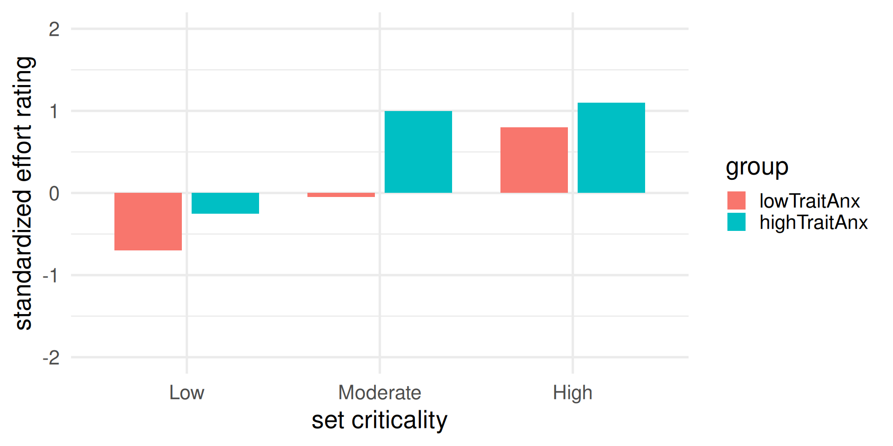
- Effort increased with set criticality
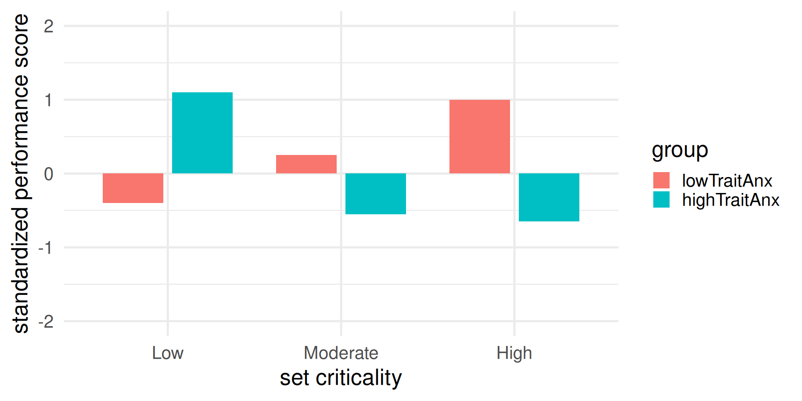
- Performance improved with set criticality for the low-trait anxiety group
- Performance declined with set criticality for the high-trait anxiety group
Interpretation: Performance and worry competed for resources. As worry (state anxiety) increased over set criticality, fewer and fewer resources were left to focus on the volleyball task. Some support for Processing Efficiency Theory
What it shows for ACT: effectiveness and efficiency dissociate. Effort increased in both groups; only the low-trait-anxiety group converted it into performance.
Visuospatial attention in target sports: the quiet eye

Joan Vickers
As a variable
- a duration, in (milli)seconds
- eyes on the critical location or object (e.g., the ball in golf putting)
- begins before movement initiation (“QE onset”)
- ends when gaze deviates from that location (“QE offset”)
As a phenomenon, extensively reported:
- experts show a longer QE than novices
- QE is longer for successful than unsuccessful performance
- it is trainable
Relevance here. On an attentional-control account the Quiet Eye is an index of which system is driving orienting: a long, steady fixation on the task-relevant target indicates goal-directed dominance, a short or erratic one indicates stimulus-driven dominance.
On this account the quiet eye provides measurable evidence for Attentional Control Theory, and quiet eye training becomes an attentional-control intervention.
The mechanisms underlying the Quiet Eye remains debated.
Quiet eye durations are longer before holed putts (Wilson & Pearcy, 2009)
Key methodology:
- N = 6 participants
- Task: Golf putting on flat and sloped surfaces
- Measure:
- Performance
- Quiet Eye duration via eye tracking
Key result:
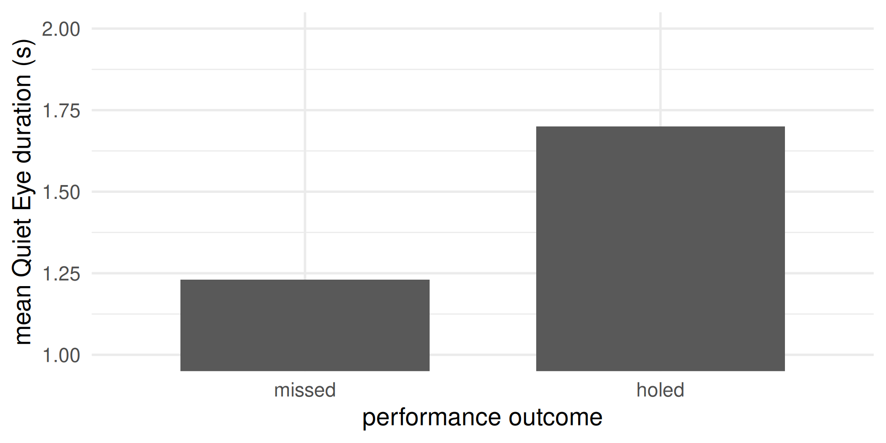
Significantly longer QE durations ahead of holed than missed putts.
What it shows for ACT: within the same performer, successful trials show longer goal-directed fixation. Quiet eye duration varies with control, not with skill level alone.
Experienced golfers show longer quiet eye durations than novices (Walters-Symons, Wilson, & Vine, 2017)
Key methodology
- N = 18 experienced golfers
- N = 21 novice golfers
- Task: flat-surface golf putting
Key result
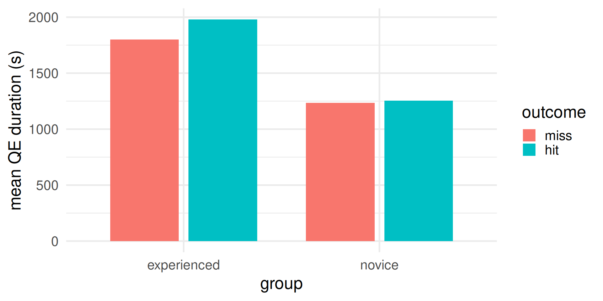
- Experienced golfers showed longer QE durations than novices
What it shows for ACT: the expert-novice difference supports quiet eye duration as a marker of attentional control.
Effort rises under competition; performance still declines (Wilson et al., 2006)
Key methodology:
- N = 24 university students
- Median split into low and high trait anxiety
- Task: simulated rally driving, under two conditions
- practice (designed to induce lower state anxiety)
- competition (designed to induce higher state anxiety)
- Measures:
- Trait and state anxiety (through questionnaires)
- Effort mobilized (through questionnaire)
- Performance (time to complete the race)
- Effort
- through questionnaire
- pupil diameter (larger pupil = more effort)
Main results:
for both groups, state anxiety increased from practice to competition.
the high-trait anxiety group showed greater state anxiety.
Pupil diameter increased from practice to competition for both groups, being also larger for high-trait anxiety group
Self-report effort showed similar results, with the practice-to-competition increase much larger in the high-trait anxiety group.
No group difference in performance during practice
Performance decreased from practice to competition
Performance drop was larger for the high-trait anxiety group
Interpretation:
There were enough spare resources in working memory to complete the driving task when worry (state anxiety) used a small amount of resources.
Worry (state anxiety) occupied more resources in competition, especially for the high-trait anxiety group.
The high-trait anxiety group mobilized more resources, increasing their working memory, but the extra resources were not enough to maintain as good performance.
These findings support Processing Efficiency Theory
What it shows for ACT: pupil diameter and self-reported effort both increased, yet performance declined further in the high-trait-anxiety group: the additional resources mobilised were insufficient.
Symptoms of a diagnosis of impaired attentional control
The presence of several symptoms makes an attentional-control diagnosis plausible.
| Symptom | Observable example |
|---|---|
| Attention captured by task-irrelevant cues under pressure | Report of noticing cameras or spectators; gaze leaving the target late in the routine |
| Worry reported before or during execution | Report of thinking about the consequences of failure |
| Effort increased, performance unchanged or reduced | Report of greater training effort without corresponding improvement; visible straining |
| Difficulty disengaging after an error | One error followed by a cluster of errors |
| Erratic gaze, or shortened final fixation, in aiming tasks | Measured by eye tracking, or inferred from a rushed pre-performance routine |
Anxiety consumes working memory and transfers attention from goal-directed to stimulus-driven control; performers compensate with extra effort, so efficiency drops before performance does.
:::
`</figure>`{=html}
::::
:::::
::::::
:::
::: {.content-visible when-format="pdf"}
**Central executive** → inhibition, shifting, updating
:::
:::
:::{.column}
[**Inhibition** = resisting the processing of task-irrelevant information (resisting distractions)]{.fragment fragment-index=1}
[**Shifting** = moving focus towards task-relevant information (concentrating)]{.fragment fragment-index=2}
[**Updating** = monitoring and processing information held in working memory]{.fragment fragment-index=3}
:::
::::
[Hypotheses 4, 5 and 6 each state that anxiety impairs one of these functions.]{.fragment fragment-index=4 .green}
[This greater specificity about the central executive is what developed Processing Efficiency Theory into Attentional Control Theory.]{.fragment fragment-index=5}
# Attentional Control Theory: six hypotheses {.scrollable}
The claims stated in Session I, set out as the six hypotheses that define the theory.
::: {.content-visible when-format="html"}
::::::{.cell fig-height="3" layout-align="default"}
:::::{.cell-output-display}
::::{}
`<figure class=''>`{=html}
:::{}
```{=html}
<svg width="960" height="288" viewbox="0.00 0.00 256.98 314.00" xmlns="http://www.w3.org/2000/svg" xlink="http://www.w3.org/1999/xlink" style="; max-width: none; max-height: none; display: block; margin: auto auto auto auto">
<g id="graph0" class="graph" transform="scale(1 1) rotate(0) translate(4 310)">
<title>G</title>
<!-- act -->
<g id="node1" class="node">
<title>act</title>
<path fill="white" stroke="black" d="M70.47,-171C70.47,-171 12.18,-171 12.18,-171 6.18,-171 0.18,-165 0.18,-159 0.18,-159 0.18,-147 0.18,-147 0.18,-141 6.18,-135 12.18,-135 12.18,-135 70.47,-135 70.47,-135 76.47,-135 82.47,-141 82.47,-147 82.47,-147 82.47,-159 82.47,-159 82.47,-165 76.47,-171 70.47,-171"></path>
<text text-anchor="middle" x="41.32" y="-156.3" font-family="Helvetica,sans-Serif" font-size="11.00">attentional</text>
<text text-anchor="middle" x="41.32" y="-143.1" font-family="Helvetica,sans-Serif" font-size="11.00">control theory</text>
</g>
<!-- h1 -->
<g id="node2" class="node">
<title>h1</title>
<path fill="#cc79a7" fill-opacity="0.200000" stroke="black" d="M237.15,-306C237.15,-306 130.48,-306 130.48,-306 124.48,-306 118.48,-300 118.48,-294 118.48,-294 118.48,-282 118.48,-282 118.48,-276 124.48,-270 130.48,-270 130.48,-270 237.15,-270 237.15,-270 243.15,-270 249.15,-276 249.15,-282 249.15,-282 249.15,-294 249.15,-294 249.15,-300 243.15,-306 237.15,-306"></path>
<text text-anchor="middle" x="183.81" y="-284.7" font-family="Helvetica,sans-Serif" font-size="11.00">1. processing efficiency</text>
</g>
<!-- act->h1 -->
<g id="edge1" class="edge">
<title>act->h1</title>
<path fill="none" stroke="black" d="M51,-171.04C63.16,-194.6 87.33,-235.83 118.64,-261 120.2,-262.25 121.82,-263.45 123.49,-264.6"></path>
<polygon fill="black" stroke="black" points="121.86,-267.71 132.21,-269.97 125.53,-261.75 121.86,-267.71"></polygon>
</g>
<!-- h2 -->
<g id="node3" class="node">
<title>h2</title>
<path fill="#cc79a7" fill-opacity="0.200000" stroke="black" d="M220.02,-252C220.02,-252 147.6,-252 147.6,-252 141.6,-252 135.6,-246 135.6,-240 135.6,-240 135.6,-228 135.6,-228 135.6,-222 141.6,-216 147.6,-216 147.6,-216 220.02,-216 220.02,-216 226.02,-216 232.02,-222 232.02,-228 232.02,-228 232.02,-240 232.02,-240 232.02,-246 226.02,-252 220.02,-252"></path>
<text text-anchor="middle" x="183.81" y="-230.7" font-family="Helvetica,sans-Serif" font-size="11.00">2. task demands</text>
</g>
<!-- act->h2 -->
<g id="edge2" class="edge">
<title>act->h2</title>
<path fill="none" stroke="black" d="M65.18,-171.16C79.91,-182.35 99.77,-196.52 118.64,-207 121.36,-208.51 124.17,-209.98 127.04,-211.42"></path>
<polygon fill="black" stroke="black" points="125.79,-214.7 136.32,-215.86 128.81,-208.39 125.79,-214.7"></polygon>
</g>
<!-- h3 -->
<g id="node4" class="node">
<title>h3</title>
<path fill="#d55e00" fill-opacity="0.200000" stroke="black" d="M229.38,-198C229.38,-198 138.25,-198 138.25,-198 132.25,-198 126.25,-192 126.25,-186 126.25,-186 126.25,-174 126.25,-174 126.25,-168 132.25,-162 138.25,-162 138.25,-162 229.38,-162 229.38,-162 235.38,-162 241.38,-168 241.38,-174 241.38,-174 241.38,-186 241.38,-186 241.38,-192 235.38,-198 229.38,-198"></path>
<text text-anchor="middle" x="183.81" y="-176.7" font-family="Helvetica,sans-Serif" font-size="11.00">3. attentional control</text>
</g>
<!-- act->h3 -->
<g id="edge3" class="edge">
<title>act->h3</title>
<path fill="none" stroke="black" d="M82.58,-160.74C93.05,-162.75 104.62,-164.97 116.07,-167.17"></path>
<polygon fill="black" stroke="black" points="115.58,-170.64 126.06,-169.09 116.9,-163.77 115.58,-170.64"></polygon>
</g>
<!-- h4 -->
<g id="node5" class="node">
<title>h4</title>
<path fill="#d55e00" fill-opacity="0.200000" stroke="black" d="M207.46,-144C207.46,-144 160.16,-144 160.16,-144 154.16,-144 148.16,-138 148.16,-132 148.16,-132 148.16,-120 148.16,-120 148.16,-114 154.16,-108 160.16,-108 160.16,-108 207.46,-108 207.46,-108 213.46,-108 219.46,-114 219.46,-120 219.46,-120 219.46,-132 219.46,-132 219.46,-138 213.46,-144 207.46,-144"></path>
<text text-anchor="middle" x="183.81" y="-122.7" font-family="Helvetica,sans-Serif" font-size="11.00">4. inhibition</text>
</g>
<!-- act->h4 -->
<g id="edge4" class="edge">
<title>act->h4</title>
<path fill="none" stroke="black" d="M82.58,-145.26C99.8,-141.95 119.97,-138.08 137.69,-134.67"></path>
<polygon fill="black" stroke="black" points="138.64,-138.05 147.8,-132.73 137.32,-131.18 138.64,-138.05"></polygon>
</g>
<!-- h5 -->
<g id="node6" class="node">
<title>h5</title>
<path fill="#d55e00" fill-opacity="0.200000" stroke="black" d="M203.39,-90C203.39,-90 164.23,-90 164.23,-90 158.23,-90 152.23,-84 152.23,-78 152.23,-78 152.23,-66 152.23,-66 152.23,-60 158.23,-54 164.23,-54 164.23,-54 203.39,-54 203.39,-54 209.39,-54 215.39,-60 215.39,-66 215.39,-66 215.39,-78 215.39,-78 215.39,-84 209.39,-90 203.39,-90"></path>
<text text-anchor="middle" x="183.81" y="-68.7" font-family="Helvetica,sans-Serif" font-size="11.00">5. shifting</text>
</g>
<!-- act->h5 -->
<g id="edge5" class="edge">
<title>act->h5</title>
<path fill="none" stroke="black" d="M65.18,-134.84C79.91,-123.65 99.77,-109.48 118.64,-99 126.24,-94.78 134.63,-90.8 142.76,-87.26"></path>
<polygon fill="black" stroke="black" points="144.28,-90.42 152.14,-83.32 141.56,-83.97 144.28,-90.42"></polygon>
</g>
<!-- h6 -->
<g id="node7" class="node">
<title>h6</title>
<path fill="#d55e00" fill-opacity="0.200000" stroke="black" d="M207.25,-36C207.25,-36 160.37,-36 160.37,-36 154.37,-36 148.37,-30 148.37,-24 148.37,-24 148.37,-12 148.37,-12 148.37,-6 154.37,0 160.37,0 160.37,0 207.25,0 207.25,0 213.25,0 219.25,-6 219.25,-12 219.25,-12 219.25,-24 219.25,-24 219.25,-30 213.25,-36 207.25,-36"></path>
<text text-anchor="middle" x="183.81" y="-14.7" font-family="Helvetica,sans-Serif" font-size="11.00">6. updating</text>
</g>
<!-- act->h6 -->
<g id="edge6" class="edge">
<title>act->h6</title>
<path fill="none" stroke="black" d="M51,-134.96C63.16,-111.4 87.33,-70.17 118.64,-45 124.81,-40.05 132,-35.87 139.31,-32.38"></path>
<polygon fill="black" stroke="black" points="140.8,-35.55 148.55,-28.34 137.99,-29.14 140.8,-35.55"></polygon>
</g>
</g>
</svg>::: :::: ::::: :::::: :::
Hypotheses 1 and 2 concern the cost of anxiety. Hypotheses 3 to 6 concern the mechanism.
ACT hypothesis 1: processing efficiency
Cognitive anxiety impairs processing efficiency more than it impairs performance.
Worry (in blue) occupies resources in Working Memory. But there are enough resources to complete the task (in yellow).
ACT hypothesis 1: processing efficiency
Cognitive anxiety impairs processing efficiency more than it impairs performance.
Worry (in blue) takes resources away from the task (in yellow). Performance is impaired.
ACT hypothesis 1: processing efficiency
Cognitive anxiety impairs processing efficiency more than it impairs performance.
Overall resources (in white) are temporarily increased through greater effort. Performance of the task (yellow) is not impaired despite the large worry (blue). Efficiency decreases.
ACT hypothesis 2: task demands
The more difficult the task, the higher the chances of decreased efficiency
If the task is easy (i.e., it requires not many Working Memory resources), the effects of worry on efficiency are not visible (no need to put extra effort).
ACT hypothesis 2: task demands
The more difficult the task, the higher the chances of decreased efficiency
It is when the task is hard (i.e., it requires many Working Memory resources), that the effects of worry on efficiency are more likely to be visible (there is need to put extra effort).
ACT hypothesis 3: attentional control
Cognitive anxiety disrupts attentional control
A scale analogy:
⚖️
goal-directed (i.e., concentration) and stimulus-driven (i.e., distraction) types of orienting compete for which one is the main driver of attention/selection (i.e., what to focus on)
Attentional control = ability to maintain a goal-directed (endogenous) attentional orienting (concentration), while suppressing stimulus-driven (exogenous) attentional orienting (distraction)
The issue when performing under pressure:
GOAL-DIRECTED STIMULUS-DRIVEN
You lose focus on the task and become distracted by non-task related information.
The objective of performing under pressure intervention:
GOAL-DIRECTED
STIMULUS-DRIVEN
You shield from distractions and maintain focus on task-related information.
ACT hypothesis 4: inhibition
How is attentional control disrupted (hypothesis 3) under elevated cognitive anxiety? Through impaired inhibition
- Impaired inhibition enhances the stimulus-driven path to attentional orienting
- One becomes unable to block out irrelevant information
- Potential distractions (non-task related activity) intrude in one’s attention
ACT hypothesis 5: shifting
How is attentional control disrupted (hypothesis 3) under elevated cognitive anxiety? Through impaired shifting
- Impaired shifting decreases the goal-directed path to attentional orienting
- One becomes unable to focus on the relevant information
- Potential important information (task related activity) are not in one’s focus
ACT hypothesis 6: updating
How is attentional control disrupted (hypothesis 3) under elevated cognitive anxiety? Through impaired updating
- When the Working Memory is overloaded, it loses the ability to update and monitor information
- One fails to keep track of changing task demands
- Processing becomes less flexible and adaptive
Pressure shortens quiet eye duration (Wilson et al., 2009)
Key idea:
- Quiet Eye duration as measure of attentional control
- Does anxiety impair QE durations?
Key methodology:
- N = 10 university students (basketball players)
- Task: free throws until 10 hits and 10 misses
- Conditions:
- Control (low pressure)
- Experimental (high pressure, competition and financial incentive)
- Measures:
- State anxiety, through questionnaire
- Quiet Eye duration, through eye tracking
Key results:
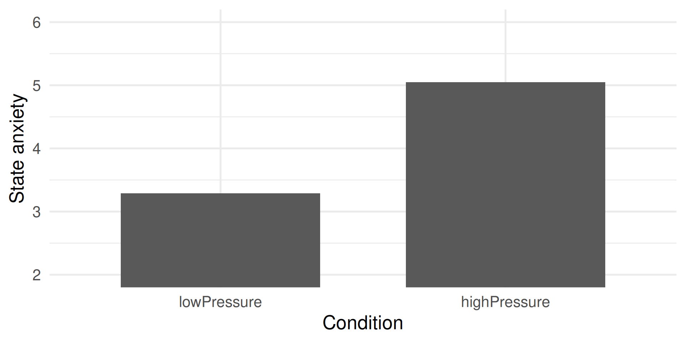
State anxiety was larger in the experimental condition.
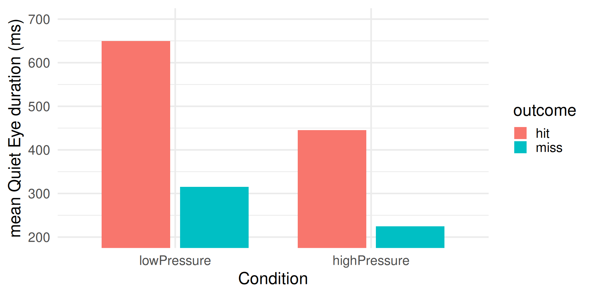
Effect of outcome: Shorter Quiet Eye duration for missed throws.
Effect of pressure: Shorter Quiet Eye duration under greater pressure.
Some evidence that attentional control is impaired under elevated state anxiety
What it shows for ACT: direct evidence that anxiety impairs attentional control in a sport task, measured rather than inferred.
Interventions
Attentional control can be addressed in two ways: by training gaze behaviour, or by training working memory capacity.
For each: what it involves, the ACT-specific mechanism it addresses, and the supporting evidence.
Not all proposed mechanisms are ACT mechanisms. Both interventions have been explained in other terms. Only the attentional-control account is considered here.
The evidence is not equally strong for both. One is well supported; the other is promising but thinly tested. The distinction matters when either is proposed as an intervention.
Gaze training
Definition: training to produce a longer and steadier quiet eye, specifically under elevated cognitive anxiety.
ACT-specific mechanism addressed (hypothesis 3):
- Quiet eye duration indexes the dominance of goal-directed orienting (concentration) over stimulus-driven orienting (distraction)
- Training a longer quiet eye trains the dominance of goal-directed orienting
Delivery. The instructions are the intervention: a fixed pre-performance gaze routine, delivered verbally, rehearsed in practice and then under induced pressure. Eye tracking is required to measure the quiet eye, not to deliver the training.
Caveats to consider for the success of training:
- most experts already show long quiet eye durations, at least under low pressure
- in many sports it is not straightforward to identify where the visual focus should be, or for how long
Quiet eye training maintains putting performance under pressure (Vine & Wilson, 2010)
First Quiet Eye training study
Key methodology:
- N = 14 university students, minimal golf experience
- control goup: technical training
- experimental group: technical and Quiet Eye training
- Design: longitudinal (i.e., over time)
- Task: straight putts
Procedure:
Training protocol instructions
Technical instructions:
- Stand with legs hip width apart and keep your head still.
- Maintain relaxation of shoulders and arms.
- Keep the putter head square to the ball.
- Perform a pendulum-like swing and accelerate through the ball.
- Maintain a still head after contact.
Quiet Eye training instructions
- Assume stance and ensure that gaze is on the back of the ball.
- Fixate the hole. (Fixation should be made no more than three times.)
- Your final fixation should be on the back of the ball and for not longer than 2-3 seconds.
- No gaze should be directed to the club head or shaft during the putting action.
- Your fixation should remain steady for 200-300 ns after contact with the ball.
Key results:
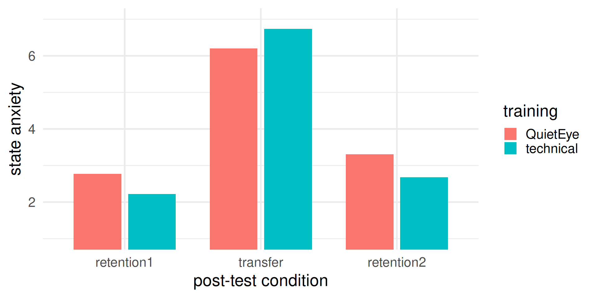
The training did not have an effect on state anxiety. The training did not distinguish people’s anxiety reaction to competitive pressure.
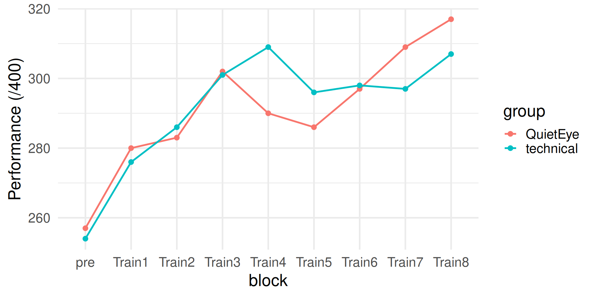
No performance differences at pre-test (before training).
Performance overall improving for both groups.
No obvious performance advantage on one group over the other.
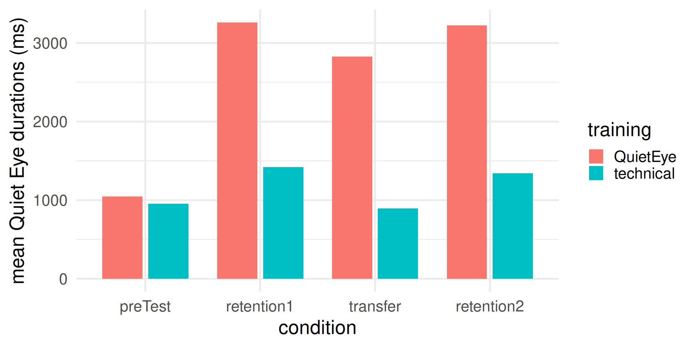
Quiet Eye durations were as expected:
- equal between groups at pre-test
- longer for the QE group, at the post-tests
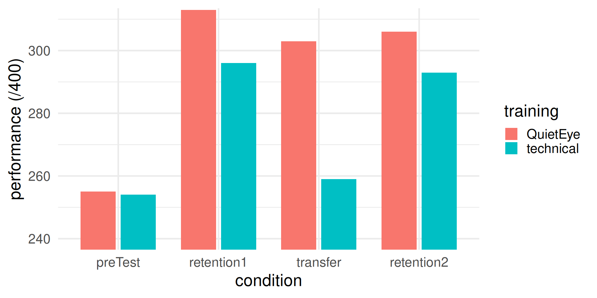
Performance was comparable across groups at all retention post-tests, except at transfer (high pressure performance), where the technical but not the Quiet Eye group showed a significant drop in performance
What it shows for ACT: gaze training altered the effect of pressure on performance without altering reported anxiety. The mechanism operated on attention rather than on emotion.
Before the result: does quiet eye training maintain performance under pressure? Respond via the poll.
Cognitive training
Definition: training to increase working memory capacity.
ACT-specific mechanisms addressed (hypotheses 1 and 4):
- worry occupies resources that would otherwise be available for task-related processing
- a permanently larger capacity would leave sufficient resources for the task despite worry
- improved inhibition would reduce the intrusion of task-irrelevant information
Delivery. Repeated sessions of an adaptive working memory task; in the studies below, computerised dual n-back over approximately three weeks.
Caveats to consider for the success of training:
- transferability to real-world tasks is disputed
- the sport evidence comes from a single research group and has not, to our knowledge, been independently replicated
Adaptive dual n-back improves attentional control under anxiety (Sari et al., 2016)
Key methodology:
- N = 26 university students, pre-screened through questionnaires for high trait anxiety and low attentional control
- experimental group: adaptive cognitive trainining (adaptive dual n-back)
- control group: low-load cognitive training (non-adaptive dual 1-back)
- Design: longitudinal (i.e., over time)
Procedure:
- Some pre and post-test measures:
- attentional control through rest state electroencephalography (EEG)
- Flanker task performance (Link to Flanker task), under anxiety-inducing conditions (loud and unpredictable noise bursts)
Training explanations:
- visual n-back: one 3x3 grid is presented at the time with only once cell illuminated. Participants need to respon when the same grid was presented n trials before.
- phonological n-back: one letter is pronounced at the time. Participants need to respon when the same letter was presented n trials before. (Link to classic visual letter n-back)
- dual n-back: visual and phonological stimuli are presented simultaneously. Trials can match visually (press a key), phonologically (press another key), or both (press both keys)
- adaptive dual n-back: the number n increased or decreased at the next block depending on accuracy at the previous block. Consult the paper for a figure of the stimuli
- Schedule: 15 sessions in 21 days
Some key results
- the adaptive group reached high levels of complexity (large n in b-back)
- The adaptive group showed better Flanker task performance under conditions of elevated state anxiety
- The adaptive group showed larger values of EEG indices associated with better attentional control
- Cognitive training improved attentional control under pressure / resilience of attentional control to pressure
What it shows for ACT: working memory capacity can be trained, with the benefit appearing specifically under elevated anxiety. This is the laboratory evidence.
Adaptive dual n-back in a tennis task (Ducrocq et al., 2017)
Key methodology:
- Similar to that of Sari et al. (2016) but in a sport task (tennis)
- N = 30 participants from tennis club
- experimental group: adaptive dual n-back
- control group: non-adaptive dual 1-back
- Some pre- and post-test measures:
- performance at change detection task
- tennis volley task performance and Quiet Eye duration, under lower and higher pressure
Some key results
- The experimental group reached performed better than the control group at the change detection task
- The experimetal group performed better at the higher pressure, whereas no changes in the control group
- The experiemntal group showed later Quiet Eye period offset than the control group
What it shows for ACT: the sport evidence for the same claim, and the weakest element of it.
Before the result: a show of hands — did the training improve volleying under pressure?
Design considerations. Approximately fifteen participants per group; no pre-training pressure test; a fixed low-then-high pressure order; and not, to our knowledge, independently replicated. Session III returns to this.
Effectiveness and mechanism are separate questions
Evidence that quiet eye training is effective is separate from evidence about the mechanism by which it works.
The first is reasonably strong: trained performers maintain performance under pressure better than technically trained controls.
The second is contested. Session III examines the evidence.
An intervention can be described as effective and interpreted through attentional control, provided the mechanism is identified as contested. A claim that quiet eye training is effective because of a particular mechanism goes beyond the current evidence.
Imposed hold vs trained quiet eye
A coach instructs an athlete in an aiming sport to hold the sight on the target for longer before release. The athlete concentrates on executing that instruction.
Is this quiet eye training?
No.
A consciously imposed hold adds an explicit instruction to monitor. It recruits step-by-step control of a movement that was previously automatic.
Trained quiet eye is a rehearsed gaze routine that becomes automatic, requiring less conscious processing under pressure rather than more.
The same outward instruction, with opposite demands on working memory. The distinction matters when evaluating an intervention a coach has already attempted.
Worked example
From observable sign to theoretical argument. An athlete reports noticing the crowd and the officials in competition but not in training, and competition scores have become variable while training scores have not.
Her report that task-irrelevant cues intrude only in competition is consistent with attentional control theory’s third hypothesis, which holds that anxiety shifts the balance of attentional control from the goal-directed system towards the stimulus-driven one (Eysenck et al., 2007). The same pattern was observed experimentally by Shapiro and Johnson (1987), where arousal removed, and then reversed, the usual dominance of a central target over a peripheral one. That the disruption appears in competition but not in training is what the theory predicts, since the shift is driven by state rather than trait anxiety.
Three steps, in order: the reported sign, the hypothesis it corresponds to, the study reporting the same effect. Then one sentence on why the pattern is consistent with the theory.
The correspondence between sign, hypothesis and evidence is what carries the argument.
Summary: applying Attentional Control Theory
The components of an argument from this theory.
The theory
Anxiety consumes working memory and transfers attention from goal-directed to stimulus-driven control; performers compensate with extra effort, so efficiency drops before performance does.
Supporting studies
- Shapiro & Johnson (1987) — arousal shifts which stimulus dominates
- Smith et al. (2001) or Wilson et al. (2006) — effort rises, efficiency falls
- Wilson et al. (2009) — pressure shortens quiet eye, and misses follow
Observable signs
Task-irrelevant cues intruding under pressure; worry reported before execution; effort up with performance flat; difficulty disengaging after an error; gaze becoming erratic.
Two interventions
- Gaze training, targeting hypothesis 3
- Cognitive training, targeting hypotheses 1 and 4
Link to mechanism
Identify the mechanism implicated, then show that the intervention acts on that mechanism rather than on performance in general.
The material in these two sessions is sufficient. Optional material adds depth and is not required.
Optional: some thoughts
Which model of performing under pressure is right?
Attentional control
Reinvestment
Challenge and threat appraisal
Psychomotor efficiency
Constrained action
Ironic processing
Etc.
No doubts these models will be refined again and again, and that’s the researcher’s job. For applied contexts, however, I encourage you to focus on the utility of a model (in explaining a phenomenon or achieving practical impact).

–>